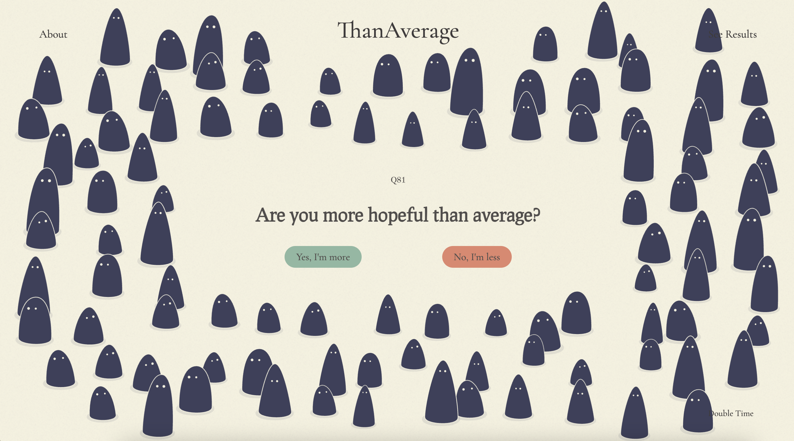
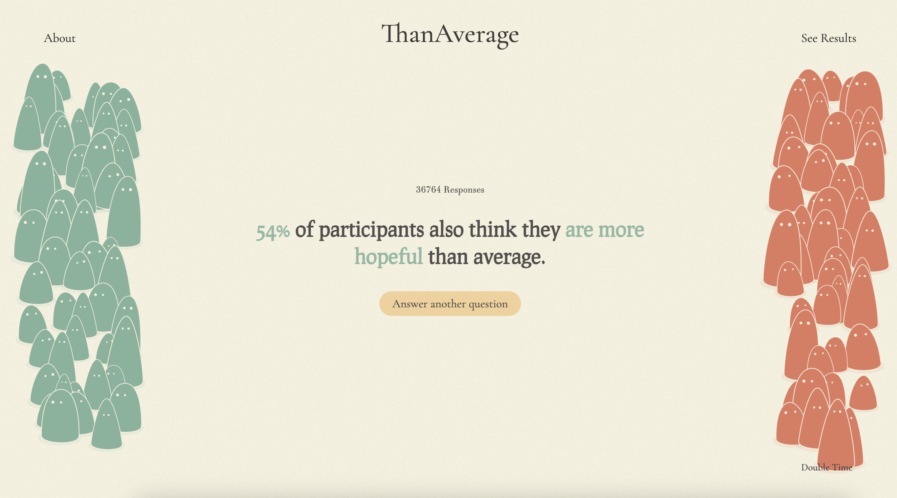
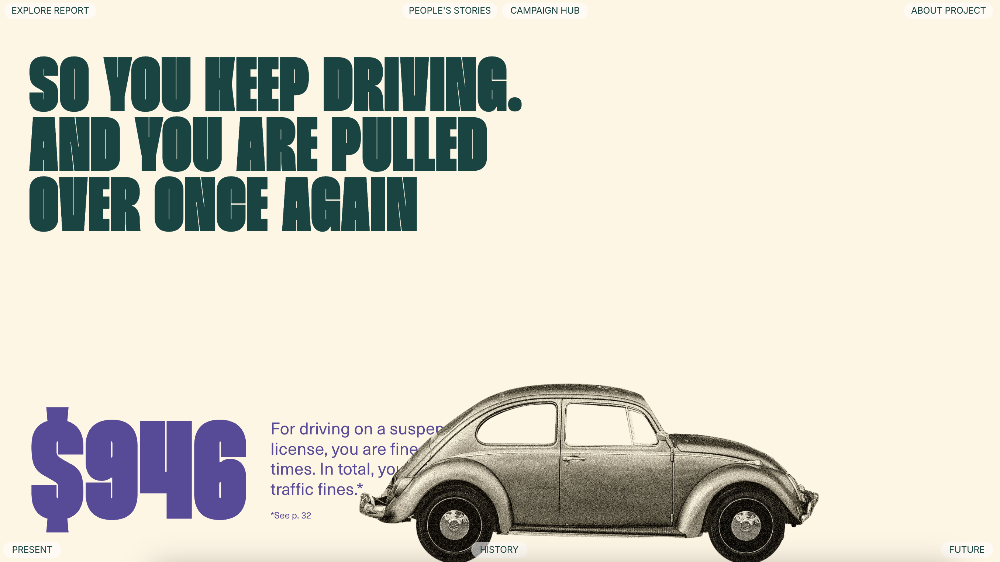
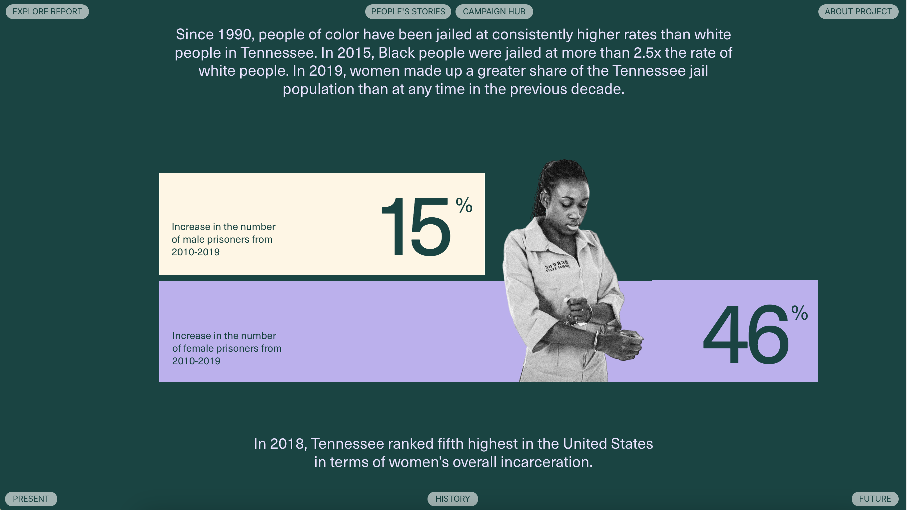

Than Average
{ view project }

ThanAverage asks users if they think they are better or worse than average for different topics and things (e.g., eating healthy, level of hope, etc.) and shows users what percentage of respondents said the same.
The visual design of this website is quite simple but effective. The questions are presented in large, bold fonts, followed by two color-coded action buttons to answer "Yes" or "No". The statistic that follows after answering highlights the percentage and the main topic of the question with the color of the button clicked on, showing color relationship and making the important information stand out. The blobs that move across the screen also make the website more fun and engaging. Overall, this website is really well done and shows how a simple questionaire narrative can be engaging and interactive with intentional design choices in text, color, graphics, etc. I will very likely be doing similar for my capstone project.
Decriminalize Poverty in Tennessee
{ view project }

Decriminalize Poverty in Tennessee is a narrative experience that takes users through how poverty has been criminalized in Tennessee and how to address it to create a better future.
This website uses a combination of colorful text and graphics to create an interactive and engaging experience. Majority of the content appears on-screen through animate on scroll, and key facts and statistics are highlighted boldly or presented through graphs. The graphics accompany the content of the text and never overshadows it, enabling users to effectively visualize the narrative while still being able to read the text. The content is also broken down into sections and chunks, providing for easier pacing throughout the experience. A narrative experience like this site is similar to what I would like to do with my project, though my content may not be as in-depth as this one.